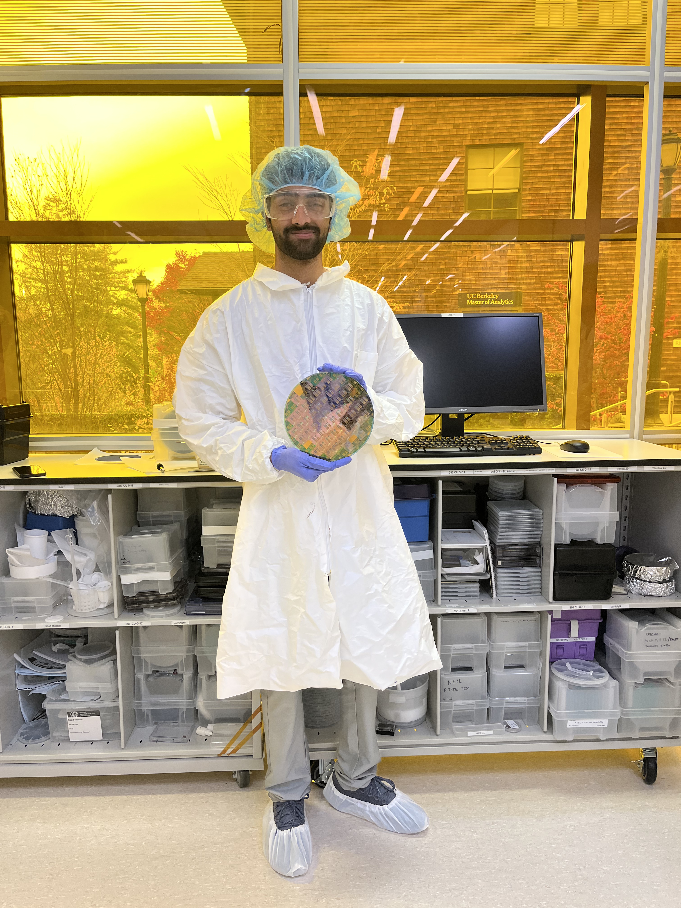

Microfabrication of a Wafer
This was a cleanroom micofabrication lab project, where I fabricated a MOS test-chip on a 3-inch <100> p-type silicon wafer using a multi-mask process (ACTV, POLY, CONT, METL). I went through the steps of photolithography, wet etching, thermal oxidation, dopant diffusion, and aluminum metallization/patterning. Afterwards I electrically characterized the resulting resistors, MOS capacitors, diodes, MOSFETs, and an inverter using probe-station measurements.
Background
Over the semester, my lab group went through an end-to-end silicon process flow to build and test working devices on a single wafer. The flow combined thin-film growth, lithography/alignment across multiple mask levels, wet chemical etching, dopant introduction + diffusion, and metallization, followed by electrical characterization on a probe station.
We started with a 3 inch <100> p-type Si Substrate. The mask levels we used in the lab were ACTV (active area), POLY (gate), CONT (contacts), METL (metal interconnect).
Process Flow
| Step | Layer / Operation | Goal | Output |
|---|---|---|---|
| 1 | Field oxidation | Grow thick isolation oxide | Field oxide on wafer |
| 2 | ACTV lithography + oxide etch | Define active regions | Exposed Si in actives |
| 3 | Gate oxidation | Grow thin gate oxide | Gate oxide (≈700–900 Å) |
| 4 | LPCVD doped polysilicon | Deposit gate material | ~4000 Å poly-Si film |
| 5 | POLY lithography + poly etch | Pattern gates | Poly gates + cleared S/D windows |
| 6 | Source/drain doping | Introduce n-type dopant | Doped S/D regions (pre-drive) |
| 7 | Drive-in + intermediate oxidation | Activate/redistribute dopant; regrow oxide | Intermediate oxide + set junctions |
| 8 | CONT lithography + oxide etch | Open contact holes | Si/poly exposed at contacts |
| 9 | Al metallization | Deposit metal film | Blanket Al on wafer |
| 10 | METL lithography + Al etch + sinter | Pattern interconnect; improve contacts | Completed devices ready to test |
